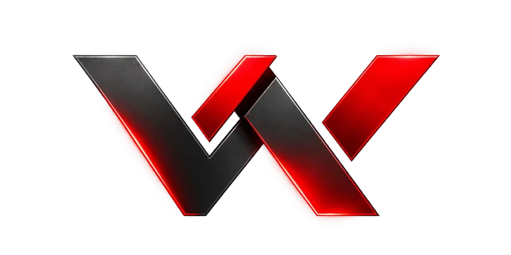

Aura Audio
Direção de arte / Interface de produto

WunderHub. Vamos conversarEstúdio independente de experiências digitais
São Paulo, Brasil
Sites, interfaces e movimento.
Uma visão criativa, da
direção
visual ao desenvolvimento.
Por Kauê Ribeiro
Estudos autorais. Ideias desenvolvidas para demonstrar possibilidades.
Direção de arte / Interface de produto
Tipografia cinética / Composição HTML
O que a experiência precisa entregar
Uma página precisa apresentar bem o negócio, orientar quem chega e tornar o próximo passo simples.
Conversar sobre o meu projetoHierarquia, tipografia e direção visual construídas a partir do seu conteúdo. Cada escolha ajuda a contar a mesma história.
Direção de arte / UI design / ResponsividadeTransições que deixam as ações claras. Estados de carregamento, feedback e navegação por teclado recebem o mesmo cuidado que a primeira tela.
Motion / JavaScript / AcessibilidadeComposições para apresentar um produto, explicar uma ideia ou dar ritmo a uma marca. Controle de tempo e reprodução diretamente no navegador.
Remotion / HyperFrames / ReactArquivos otimizados, conteúdo legível e recursos carregados conforme a necessidade. Da tela pequena à publicação, com testes no navegador.
Performance / SEO técnico / DeployWunderHub em movimento
Um experimento visual sobre forma, código e movimento. Criado como uma composição de vídeo em React.
Design & desenvolvimento
Quem está por trás
Você fala com quem desenha e desenvolve. A WunderHub é meu espaço para criar experiências digitais, testar novas ferramentas e transformar ideias em projetos navegáveis.
Os trabalhos apresentados aqui são estudos autorais. Cada um explora uma parte da experiência: o produto, a interação ou o movimento.
Ver o código deste portfólioO próximo projeto pode ser o seu.
Contato direto pelo WhatsAppConte a ideia. A gente começa por aí.